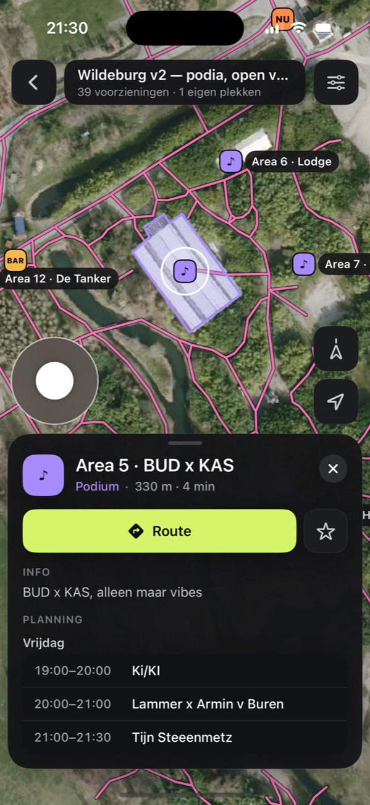
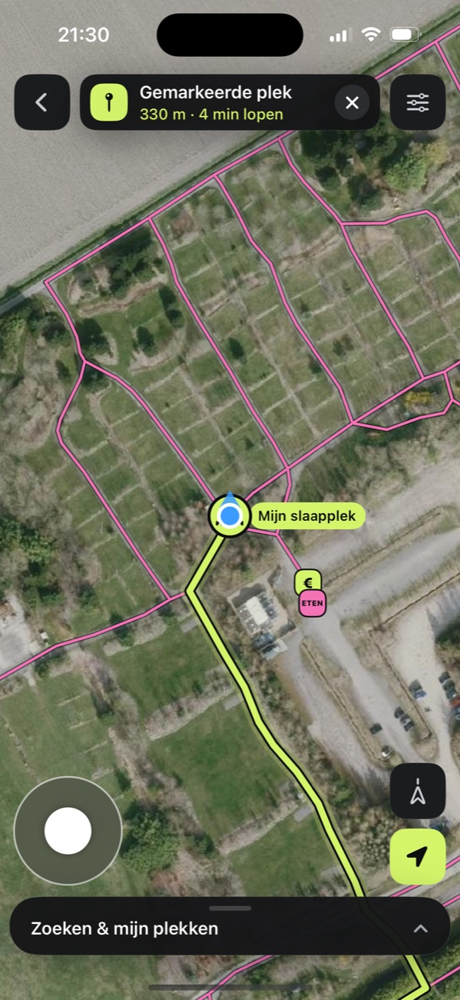
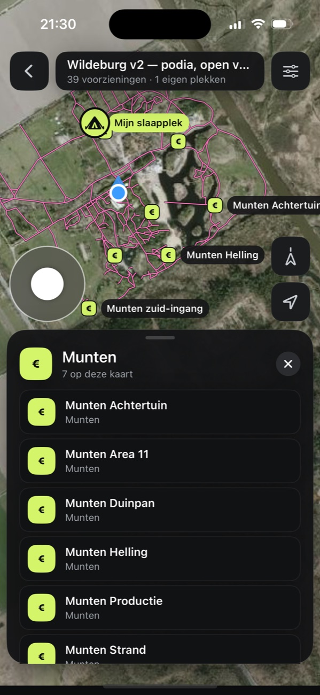

Jouw terrein.
In een navigatie-app.
Je hebt al een plattegrond. floc maakt er een kaart van waarmee elke bezoeker zelf de weg vindt: naar het podium, de bar, de WC, de EHBO of de nooduitgang. Met jouw paden, jouw namen en jouw timetable.

Lagen
Je bezoekers verdwalen op jouw terrein.
Gewone kaart-apps kennen je festival niet: geen paden, geen podia, geen bars. Een PDF-plattegrond laat niet zien waar iemand staat. En met duizenden mensen op één plek valt het netwerk weg. Het resultaat: rondzwervende bezoekers, volle infobalies en crew die de hele dag de weg wijst.
Minder "waar is…?" bij de infobalie
Bezoekers vinden zelf het podium, de WC en de munten. Je crew en de infostand hebben hun handen vrij voor echte vragen.
Veiligheid zichtbaar
EHBO, nooduitgangen en calamiteitendoorgangen staan op de kaart, met de route ernaartoe. Ook zonder netwerk.
Betere spreiding over het terrein
Wie weet dat er 150 meter verderop een rustige bar is, hoeft niet in de rij bij de drukste. Kleinere podia en verborgen plekken worden ook gevonden.
Jouw huisstijl, jouw terrein
Eigen kleuren voor paden en categorieën, eigen namen voor elke area. De kaart voelt als jouw festival, niet als een standaardkaart.
Van plattegrond naar app in drie stappen.
Alles gebeurt in het floc-dashboard. Tijdens de pilot doen we het samen met je, of nemen we het helemaal van je over.
Plattegrond erin
Upload je PDF of tekening. Prik een paar punten aan en hij ligt precies over de luchtfoto, op de juiste plek.
Teken & vul in
Teken paden en open velden, zet podia, bars, WC's en nooduitgangen neer. Voeg info, foto's en de timetable toe.
Test & publiceer
Test routes direct in je browser, met precies dezelfde berekening als de app. Klopt alles? Publiceren, en je bezoekers hebben hem.
Elke voorziening op de kaart
Als stip of met de echte omtrek, zoals een podium of een foodcourt. Met naam, info en foto.
Timetable per podium
Vul per dag in wie er speelt. Bezoekers zoeken op een act en zien meteen waar en wanneer.
Paden en open velden
Routes lopen over de paden die jij tekent, en recht over velden die je als beloopbaar markeert.
Routes testen
Klik twee punten aan en zie welke route je bezoekers krijgen, nog voordat het festival begint.
Luchtfoto inbegrepen
Je terrein en de omgeving komen met een actuele luchtfoto als ondergrond.
Een app die jouw festival kent.
Zoeken op act of podium, een route naar de dichtstbijzijnde WC, en de weg terug naar de eigen tent. Alles werkt ook zonder bereik. Bekijk alle functies →



Gemaakt voor events in de buitenlucht.
floc werkt met GPS. Daarom is het gemaakt voor terreinen onder de blote hemel, waar een stuk land of een paar straten een paar dagen een eigen stad wordt.
Festivals
Bos, weiland of strand. Meerdere podia, campings en duizenden tenten.
Marathons & runs
Start, finish, bevoorrading, kleedruimtes en de beste plekken om aan te moedigen.
Stadsfeesten & Koningsdag
Afgesloten straten, podia op pleinen en omleidingen. De situatie van die dag, niet de normale.
Kermissen & braderieën
Attracties, kraampjes, eten en drinken, verspreid over straten en pleinen.
Word een van de eerste floc-festivals.
We zoeken een handvol festivals en events om floc het komende seizoen samen mee te testen. Wij maken je kaart, jij geeft ons eerlijke feedback.
- Wij zetten je terrein op de kaart
- Directe lijn met het team
- Invloed op wat we hierna bouwen
Goed om te weten.
Hoeveel werk is het om mijn event op floc te krijgen?+
Je begint met de plattegrond die je al hebt. In het dashboard leg je die over de luchtfoto, teken je de paden en zet je de voorzieningen neer. Tijdens de pilot doen we dat samen met je, of nemen we het helemaal van je over.
Wat heb ik nodig om te beginnen?+
Een plattegrond van je terrein, als PDF of afbeelding, en een lijst van je podia en voorzieningen. Heb je een timetable, dan zetten we die er meteen bij.
Werkt floc ook voor indoor events?+
Nog niet. floc bepaalt je locatie met GPS, en dat werkt binnen niet goed genoeg. Daarom richten we ons nu op events in de buitenlucht, zoals festivals, runs, stadsfeesten en kermissen.
Hebben bezoekers internet nodig op het terrein?+
Nee. De kaart van je event staat op de telefoon van de bezoeker, met luchtfoto, paden, voorzieningen en timetable. Routes worden op de telefoon zelf berekend.
Kan de kaart in mijn eigen stijl?+
Ja. Je kiest zelf de kleur van de paden en de categorieën, en je geeft elke area, elk podium en elke bar de naam die je bezoekers kennen.